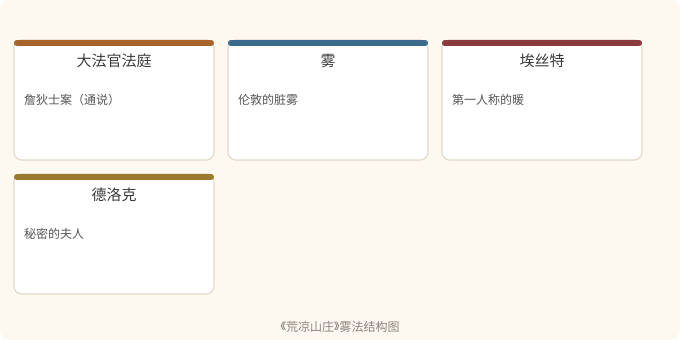

荒凉山庄
一、基本信息
| 作者 | 狄更斯 |
|---|---|
| 成书/出版 | 1853年（作者页 B120 口径：荒凉山庄（1853）） Charles Dickens — Encyclopaedia Britannica（百科全书） |
| 国别/地区 | 英国 |
| 时代 | 近代 · 19世纪 |
| 体裁 | 长篇小说 |
| 语言 | 英语 |

《荒凉山庄》雾法结构图（主题·结构图）
二、创作背景
作者页（B120）：狄更斯 major_works 载'荒凉山庄（1853）'（B120 作者页定位，详见 dawei 条核对）。
题材（通说待核）：詹狄士案（Jarndyce v Jarndyce）——大法官法庭的旷日诉讼；雾与法律的双主题。
三、内容脉络
大法官法庭的'荒凉'：詹狄士案吞噬所有人（通说待核）。
双叙述：埃丝特第一人称与全知视角交替（结构通说待核）。
四、主要人物表
| 人物 | 身份 | 说明 |
|---|---|---|
| 埃丝特·萨默森 | 养女 | 部分叙述者（通说待核） |
| 德洛克夫人 | 贵妇 | 秘密（通说待核） |
五、主题与艺术特点
- 法律机器的荒诞（通说）。
- 雾都的卫生与贫困（通说待核）。
- 双叙述实验（通说待核）。
六、影响与评论
- 作者页：狄更斯代表作谱系（B120 作者页口径）。
Charles Dickens — Encyclopaedia Britannica（百科全书） - 对大法官法庭的批判被认为推动司法改革（通说待核）。
Charles Dickens — Encyclopaedia Britannica（百科全书）
七、阅读建议
难点
- 双叙述切换。
- 法律术语。
- 《荒凉山庄》（上海译文出版社黄邦杰译本？——通说待核）。
- 英文原版（公有领域）。
狄更斯中后期之作。
八、待核实
- 1852—53年连载与1853年出版核对。
- 埃丝特/德洛克夫人人名核对。
- 詹狄士案原型（Jennens案）待核。